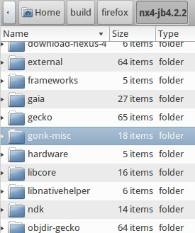
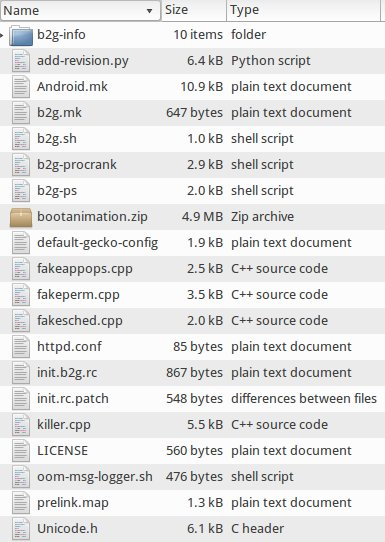
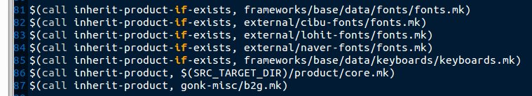
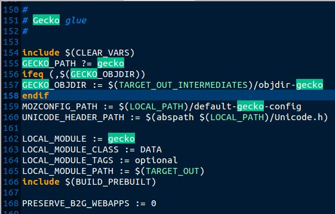

如果你對如何 build Firefox OS 不熟悉，請先閱讀 http://tech.mozilla.com.tw/posts/2786/easy-3-steps-to-build-firefox-os 。當我們用 config.sh nexus-4 下載 source code 完畢，在工作目錄底下會有兩套 source code，
一套是部份的 AOSP source code，另外一套是 Firefox OS 的 source code。AOSP build system 利用 google 優化過的 gcc tool chain 來 build code，Firefox OS 也用相同的 gcc tool chain 來 build gecko，gaia，因此如何讓 AOSP build system 可以知道 gecko，gaia 的存在，就是 gonk-misc 的工作 。

gonk-misc 裡面有兩個 .mk file，Android.mk 與 b2g.mk 。對於熟悉 AOSP 的人，Android.mk 應該不會陌生，裡面定義了 module name，module 的 source，最後 module 要放在 target image 的哪個目錄底下，但是 b2g.mk 呢 ？

在深入探討 gonk-misc 前，請先回顧一下 AOSP 的 build system，大家可以參考這個說明 http://www.ibm.com/developerworks/cn/opensource/os-cn-android-build/ ，看完後大家馬上就可以想到，我們就是利用 AOSP 原來的 build system，經過 gonk-misc，就可以把 Firefox OS 的 build system 跟 AOSP build system 連接起來 。現在馬上來看看 AOSP 裡面的機關 ： build/target/product/generic_no_telephony.mk，原來多加了一行：
$(call inherit-product, gonk-misc/b2g.mk)

下面的左圖是 Android.mk， 列出 Firefox OS 可能會用到的 module/package, 還有 Firefox OS 自己的設定如 FOTA, shared lib 等等 。下面的右圖是 b2g.mk，指定了 gecko，gaia，還有一些 Firefox OS 特有的程式需要被放到 target image。如此一來，雖然有兩套 code base ( AOSP 與 Firefox OS )，但卻可以整合起來了。


此外 AOSP 需要 build java code，但是 Firefox OS 卻用不到 java code，因此也不需要 build java code，這時候為了不大修 AOSP build system，因此在 AOSP build 底下多了一個 fake-jdk-tools folder，裡面有三個執行檔， java， javac， jar ，內容都是只有兩行 ：
#!/bin/bash
echo Fake $0
因此當 AOSP build system 執行到需要 build java 時，都不會真的去 build java，也不會有錯誤產生，又不會破壞原來的 build system 的架構，又不用大修 AOSP build system。
經過這些說明就能了解 Firefox OS 透過 gonk-misc，讓 AOSP build system 與 Firefox OS build system 連結起來， 先 build 出 Firefox OS 必須的 AOSP shared library，最後 build 出完整的 Firefox OS image。